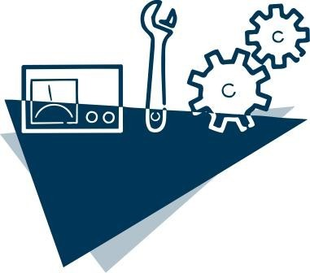

Mantenimiento
.
.
.
El Mantenimiento se relaciona con los mecanismos establecidos desde el diseño para que el nuevo sistema permita hacer reparaciones correcciones o cambios (mejoras). Esta fase es considerada una de las más importantes en el ciclo de vida del software y depende en gran medida de la calidad de la documentación del sistema.
Autor del video: Jose Antonio Guevara, Publicado el 24 nov. 2013